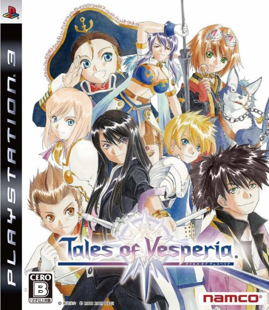

テイルズオブヴェスペリア
 2008年8月7日発売プラットフォーム：Xbox 360 , PS3 , PS4 , Xbox One , Win , Switch（PS4以下はREMASTER版）
シリーズ第10作目。
Xbox系で発売されたマザーシップタイトルは本作が初である。
戦闘ではフェイタルストライクという術式に対する耐久値を0にした瞬間に発動させることで、専用の演出とともにエネミーを即死させる（ボスエネミーには大ダメージを与える）システムが追加され、戦略の幅が広がった。成功によってHP回復や攻撃力の上昇など効果も得られるため、メリットは大きい。また本作の秘奥義演出の一部は、カットインが動くようになっている。グラフィックはトゥーン調で、他作品と比べて柔らかさを感じるモデル造形となっている。
本作の主人公は年齢が21歳と、10代の主人公が多いテイルズオブシリーズの中では珍しい年齢設定である。当初はXbox 360というPS系やニンテンドー製品に比べてプレイヤーの年齢層が高めのプラットフォームで発売されていたのはその要因の一つだろう。
主人公が成人であり、大人という立場に居る故か、他キャラクターの成長を見守るような立ち位置にいることが多い。反面、ダークヒーロー的な位置にも座しており、ストーリー上で『必殺仕事人』のような行動に出ることも。ここまでの話では陰鬱なストーリー展開がなされるかと思ってしまうが、実はそうでもないというのが面白い。個人的な感想であるが、入手難度の低さや取っつきやすさから、初めてテイルズオブシリーズをプレイする人にお勧めしたい作品の一つである。